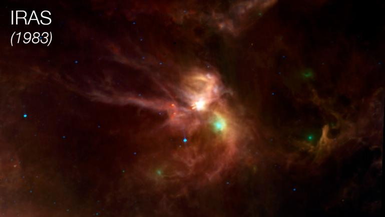

Trazando el Nacimiento Estelar: La Poderosa Visión Infrarroja de IRAS en Rho Ophiuchi
Esta imagen de la región de formación estelar Rho Ophiuchi, capturada en 1983 por el Satélite Astronómico Infrarrojo (IRAS), revela estrellas recién nacidas ocultas por densas nubes de gas y polvo. El IRAS, primer telescopio infrarrojo en órbita, permitió ver a través de estas capas opacas, mostrando la importancia de los telescopios espaciales para explorar longitudes de onda infrarrojas no visibles desde la Tierra